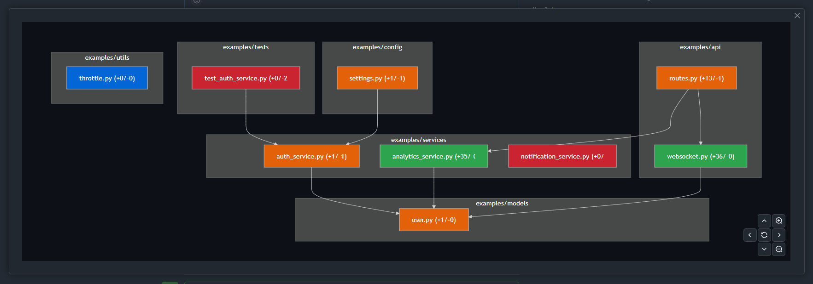

01 / Impact
Blast radius
Trace the direct and transitive dependents of each changed production file, with the exact import path that connects them.
Bounded to 1–5 hops · default 2
GitHub Action · Pull request decision support
CodeScope shows what a pull request could break, which test evidence is missing, and which architecture rule it bends — in one stable comment, before anyone clicks approve.
One rule broken, one file without a mapped test.
service.py depends on changed core.py
core.py: no mapped test
ui.py now imports data.py — ui-data-boundary
core.pyThree signals, one decision
Every warning carries a path, a mapping, a rule, or an explicit limit. When CodeScope cannot prove something, it says so instead of guessing.
01 / Impact
Trace the direct and transitive dependents of each changed production file, with the exact import path that connects them.
Bounded to 1–5 hops · default 2
02 / Evidence
Find tests that import the changed code and tests you mapped in policy. Flag production changes with no supported evidence.
Evidence, not coverage claims
03 / Boundaries
Catch newly added forbidden imports and dependency cycles, using rules your team versions alongside the code.
Policy read from the base branch
Deterministic by design
CodeScope reads source text and Git history. It never imports or runs the pull request’s code, and every result is the same on every run.
File paths, additions, deletions and change types from the pull request.
Repository-local imports from Python, JavaScript, TypeScript, JSX and TSX.
Impact paths, mapped tests, and base-branch rules against head and base.
State, evidence, actions, and an optional collapsed Mermaid map.
Dependency evidence · hover or focus a node
Choose a node to inspect its evidence.

How to use CodeScope
Add one workflow, declare only the rules your team needs, then open a pull request. No hosted service, no AI API key.
Install
Create .github/workflows/codescope.yml. Full history lets CodeScope tell existing dependencies apart from new ones.
name: CodeScope merge readiness
on:
pull_request:
types: [opened, synchronize, reopened]
permissions:
contents: read
pull-requests: write
jobs:
codescope:
runs-on: ubuntu-latest
steps:
- uses: actions/checkout@v4
with:
fetch-depth: 0
persist-credentials: false
- uses: shivamshinde123/CodeScope@masterConfigure · optional
Add .codescope.toml on the base branch for architecture rules, cycle detection, or explicit test mappings.
[analysis]
max_depth = 2
[architecture]
forbid_cycles = true
[[architecture.forbid]]
id = "ui-data-boundary"
from = "src/ui/**"
to = "src/data/**"
reason = "Use the service layer."
[[tests.map]]
source = "src/payments/**"
tests = ["tests/payments/**"]Review
CodeScope keeps one comment up to date. Read the state first, then the evidence and actions, then the diagram.
No high-confidence action found. Not a safety guarantee.
Indirect production dependents deserve attention.
A test mapping or architecture requirement is missing.
A stated limit prevented a useful conclusion.
Bounded on purpose
| Languages | Python, JavaScript, TypeScript, JSX, TSX |
|---|---|
| File size | Files over 1 MB are skipped |
| Repository size | At most 5,000 supported source files |
| Traversal | 2 dependency hops by default, up to 5 |
| Deleted files | Reported as analysis incomplete, never a silent pass |
“A clean result is guidance, not proof that a change is safe.”
01
Source stays inside the GitHub runner and is never sent to an AI provider.
02
A pull request cannot weaken the rules that evaluate it.
03
Unsupported or bounded evidence produces an incomplete state.
04
The text holds every finding. Color and diagrams only support it.